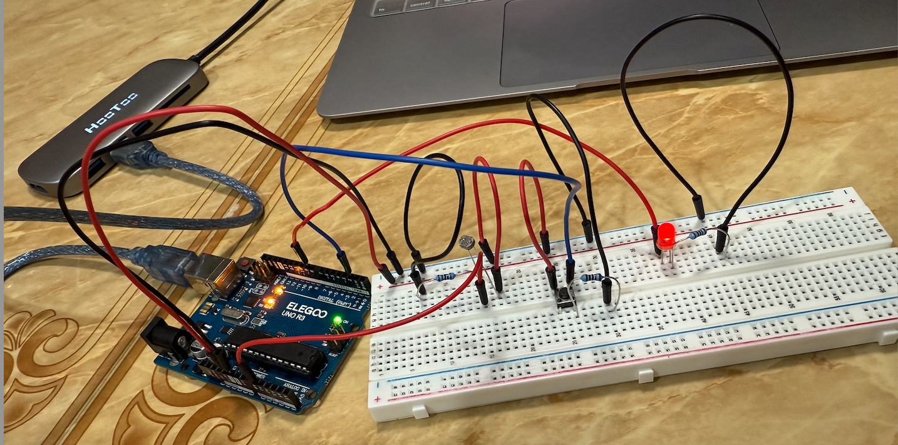

There are 2 inputs, and 1 output in my schematic. The 2 inputs are the button and the potentiometer. The button is connected to Pin 2, and the potentiometer is connected to A0. My output is the Red LED that will change brightness depending on mouse movement on the website, and it is connected to pin 9 because that pin will support change in brightness.
This was how I built my circuit:
I used a 220 ohm resistor for the red LED because red has a voltage drop of 1.8V, and the desired current is 20 mA, I calculated the LED to have 160 ohms of resistance and therefore, used a 220 ohm resistor. I used a 10k ohm resistor for the button because 10kΩ it ensures low power consumption while still providing a strong LOW signal. 10kΩ ensures stable HIGH/LOW readings without excessive current draw. I also used a 10k resistor for the potentiometer because it provides a good balance betweeen lower power consuption, stable voltage readings, and sufficient range of values (0-1023) for analogRead(A0). 10kΩ allows smooth potentiometer readings without excessive current draw.
Below is the code I created to run my circuit:
My sketch.ino file:
const int LED_PIN = 9; // Set pin 9 for LED (PWM to fade)
const int BUTTON_PIN = 2; // Set button digital pin 2
const int POT_PIN = A0; // Potentiometer to analog pin A0
void setup() {
pinMode(LED_PIN, OUTPUT); // LED to output
pinMode(BUTTON_PIN, INPUT_PULLUP); // button to input
Serial.begin(9600); // start serial communication
}
void loop() {
int potValue = analogRead(POT_PIN); // read potentiometer value (0-1023)
int buttonState = digitalRead(BUTTON_PIN); // read button state (HIGH or LOW)
// print values to serial monitor
// button unpresssed is 0, pressed is 1
Serial.print(potValue);
Serial.print(",");
Serial.println(buttonState);
// check if data is available from p5.js
if (Serial.available() > 0) {
String input = Serial.readStringUntil('\n'); // read incoming serial data
int brightness = input.toInt(); // convert to integer
if (brightness >= 0 && brightness <= 255) {
analogWrite(LED_PIN, brightness); // adjust LED brightness based on received value
}
}
delay(50); // set small delay
}
My index.js file:
const BAUD_RATE = 9600; // match with Arduino's baud rate
let port, connectBtn; // declare global variables
let buttonState = 1; // store button state
let potValue = 0; // store potentiometer value
let bgColor = 255; // default background color
function setup() {
setupSerial(); // run serial setup function
// create full-screen canvas
createCanvas(windowWidth, windowHeight);
// p5 text settings
textFont("system-ui", 30);
textStyle(BOLD);
textAlign(CENTER, CENTER);
// create the connect button
connectBtn = createButton("Connect to Arduino");
connectBtn.position(20, 20);
connectBtn.mousePressed(onConnectButtonClicked);
}
function draw() {
const portIsOpen = checkPort(); // check if port is open
if (!portIsOpen) return; // if port is not open, exit the draw loop
let str = port.readUntil("\n"); // read from the serial port until newline
if (str.length == 0) return; // if no data is received, return
let values = str.trim().split(","); // split data by comma
if (values.length === 2) {
potValue = int(values[0]); // convert potentiometer value to integer
buttonState = int(values[1]); // convert button state to int
}
// update background color if the button is pressed
if (buttonState === 0) {
bgColor = color(random(255), random(255), random(255)); // set background color to random
}
background(bgColor); // update background color
// display instructions
fill(0);
textSize(map(potValue, 0, 1023, 20, 80)); // Change text size with potentiometer
text("Move the mouse to control LED brightness", width / 2, height / 3);
text("Press the button to pause background color", width / 2, height / 2);
text("Touch the potentiometer to change text size", width / 2, height * 2 / 3);
// send LED brightness value based on mouse X position**
let brightness = map(mouseX, 0, width, 0, 255);
brightness = constrain(brightness, 0, 255); // make sure value stays in range
port.write(brightness + "\n"); // send brightness to Arduino
}
// serial setup function
function setupSerial() {
port = createSerial();
// check previously used ports
let usedPorts = usedSerialPorts();
if (usedPorts.length > 0) {
port.open(usedPorts[0], BAUD_RATE);
}
}
// check if serial port is open
function checkPort() {
if (!port.opened()) {
connectBtn.html("Connect to Arduino");
background("gray"); // grey background if not connected
return false;
} else {
connectBtn.html("Disconnect");
return true;
}
}
// handle button connection click
function onConnectButtonClicked() {
if (!port.opened()) {
port.open(BAUD_RATE); // open serial connection
} else {
port.close(); // close connection
}
}
My index.html file:
(not sure if this code is needed, but I have a ss of it because I can't get it into a code snippet)
analogRead returns values from 0-1023. I set my lower and upper bound of value target range for my text size from 20px to 80px. When the potentiometer is untouched, analogRead(A0) ≈ 690 and when the potentiometer is touched, analogRead(A0) ≈ 290. Therefore, I mapped my text size to 20px to the min potentiometer value of 0, and to 80px to the max potentiometer value of 1023. I found that 20px keeps the text readable but small when potentiometer is at minimum, and 80px makes the text noticably larger when the potentiometer is at maximum. LED brightness ranges from 0 (off) to 255 (max brightness) and mouseX ranges from 0 (left) to width (right). My mapping ensures that when the mouse is left (x=0), the LED brightness is 0 (dim) and when mouse is right (x=width), the LED brightness is 255 (full bright).
Here is a video of my circuit in action:

Based on the way I coded my circuit, if I move my mouse to the right on the webpage, the red LED will brighten. If I move my mouse to the left, my red LED will dim. If I press the button, then my background color would pause and remain with that background color until I stop pressing the button. If the button is not pressed, then the background color will be randomized. And lastly, if I touch the potentiometer, then the text font size will decrease, and if it is left untouched, then the font size will go back to its default size (30 pixels).